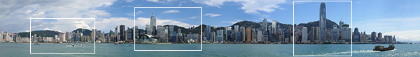

This example demonstrates how to trigger Shadowbox using the area tags on a client-side image map. Click inside one of the white squares to bring up an larger version of that portion of the image.

This file is part of Shadowbox.js.